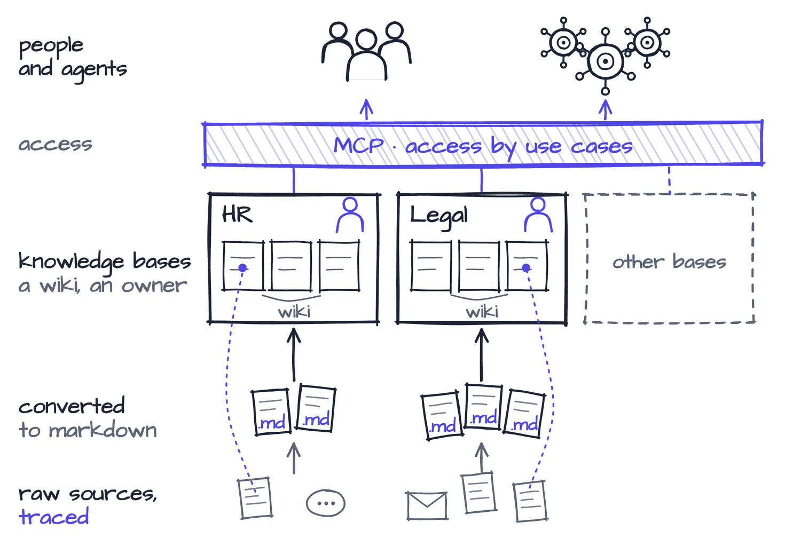

Benoit RousseauxVersion 2.5 · 16 November 2026
The Knowledge Mesh
Bridging knowledge management and agentic AI at scale
If only the company knew what it knows. A playbook to bring the right knowledge, in the right shape, to the right place at the right time, for people and AI agents alike.
PDF only · playbook 1.7 MB (also text only) · slides 1.3 MB · or view the slides online
- Chapters
- 9
- Annotated sources
- 21
- Figures & tables
- 6 · 13
- Format
- PDF 28 pages
Downloads
Articles

About
Benoit Rousseaux
Interested in new technologies and in how people make them their own, to create use, impact and meaning.
A hands-on practitioner of AI since 2017: first on industrial performance programmes built on machine learning, then, since the arrival of generative AI, on the way it changes uses and organisations, in companies and in society.
Follow on LinkedIn